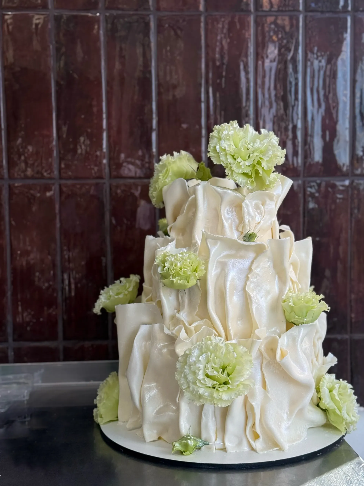
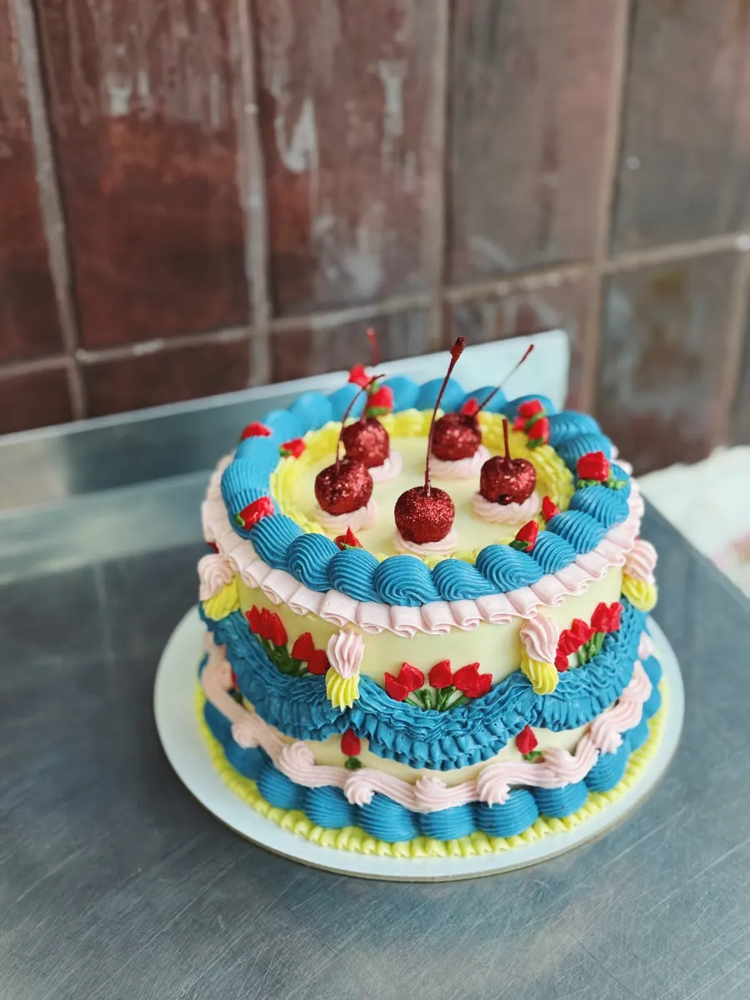
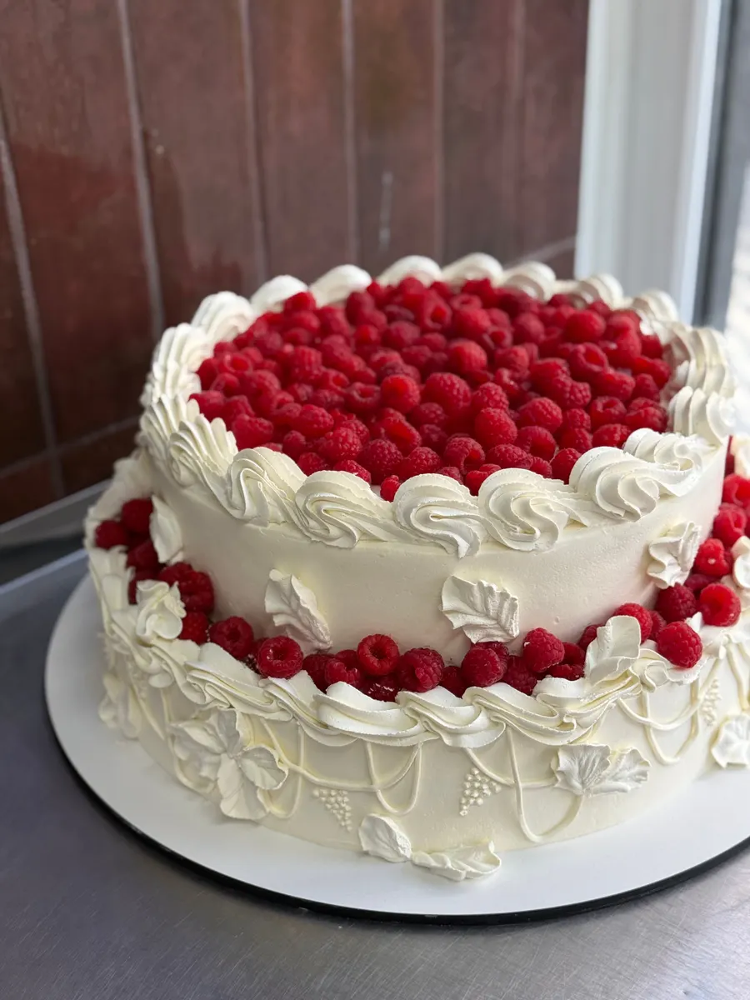
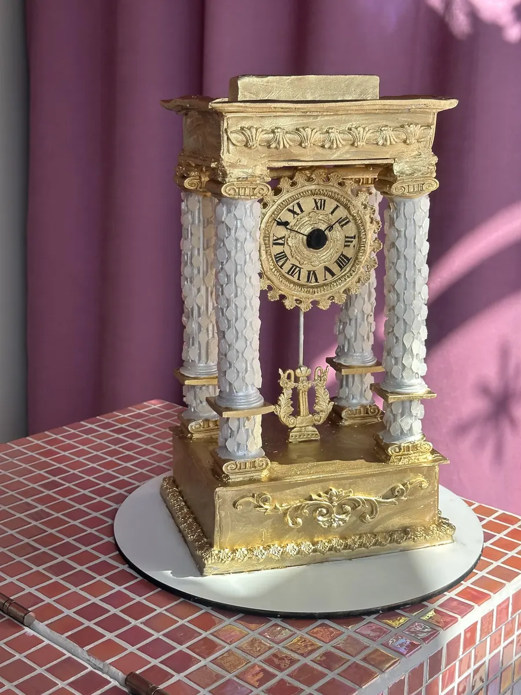

Кондитерская на 121-й Стрелковой Дивизии
Авторские торты и корпусные десерты в Воронеже
Торты в любом дизайне, корпусные пирожные, чизкейки и десерты. Можно заказать торт или зайти за десертом к чаю: в кондитерской есть витрина.

- 4,8 на Яндекс.Картах, 30 оценок
- Торты в любом дизайне
- Открыто ежедневно с 9:00 до 20:00
Что у нас можно заказать и купить
Цену торта называем при заказе: она зависит от размера, начинки и оформления.
Торты
- Торт на заказлюбой дизайн, начинки на любой вкусуточнить
- Чизкейк «Малина-фисташка»уточнить
- Свадебный тортуточнить
Десерты из витрины
- Корпусные пирожныефисташка, манго, кофеуточнить
- Тирамисууточнить
- Фисташковая картошкауточнить
- Трюфельуточнить
Как заказать торт
- 01
Повод и дата
Напишите в Telegram или позвоните: скажите, к какому дню нужен торт.
- 02
Дизайн и начинка
Расскажите, каким должен быть торт, мы подберём дизайн и начинку на любой вкус.
- 03
Забрать или с доставкой
Заберите торт на улице 121-й Стрелковой Дивизии, 9 или закажите доставку.



Что пишут клиенты
Дизайн в точности
«Заказываю разные дизайны на тортики, исполнение точное и красивое», пишет Наталья Новосильцева.
Дизайн и вкус на выбор
«Всегда подберут дизайн и начинки на любой вкус», пишет Азарнина Ю.
Милая доставка
«Доставляют в крафтовом пакете с шариком, что очень мило», пишет Екатерина Кошелева.
Предложат попробовать
«Очень понравилось, что сотрудники не просто выдают заказ, а предлагают попробовать новинки», пишет Соня Дроздова.
Отзывы с Яндекс.Карт
«Беру торты и десерты только в этой кондитерской уже 3 года. Всегда всё восхитительно вкусно, кондитеры профессионалы. Заказываю разные дизайны на тортики, исполнение точное и красивое. Уже мои друзья сами заказывают мне торты на дни рождения отсюда и на свои праздники тоже)»
Наталья Новосильцева · 9 декабря 2025
«Заходила просто за кусочком чизкейка к чаю, а в итоге ушла с целым набором десертов! Очень понравилось, что сотрудники не просто выдают заказ, а предлагают попробовать новинки. Это очень приятный подход! Спасибо за отличное настроение и вкусные десерты!»
Соня Дроздова · 30 ноября 2025
«Несколько раз заказывала торты тут. Ожидание/реальность на 100% совпадают. Вкусные начинки, больше всего мне понравился чизкейк малина-фисташка. Доставляют в крафтовом пакете с шариком, что очень мило»
Екатерина Кошелева · 13 января
Отзывы с карточки на Яндекс.Картах, без правок.
Контакты
- Адрес
- улица 121-й Стрелковой Дивизии, 9, Воронеж
- Часы
- ежедневно, с 9:00 до 20:00
- Телефон
- +7 (951) 877-15-34